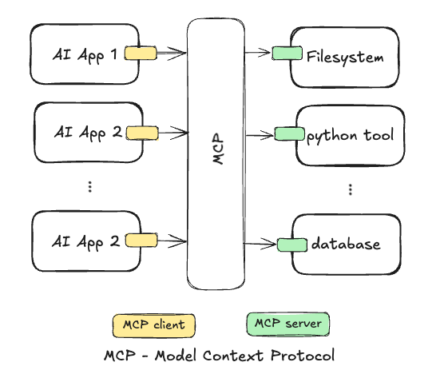
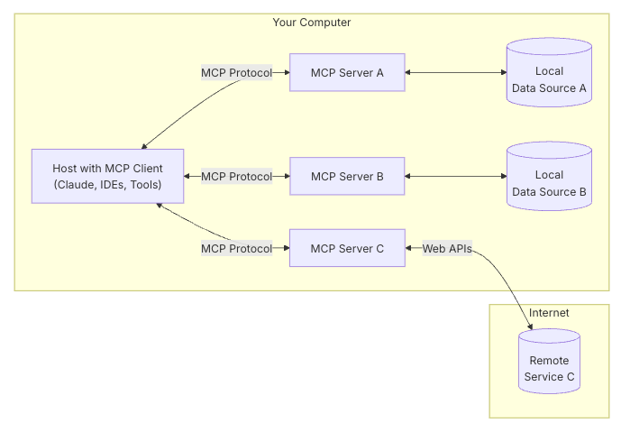
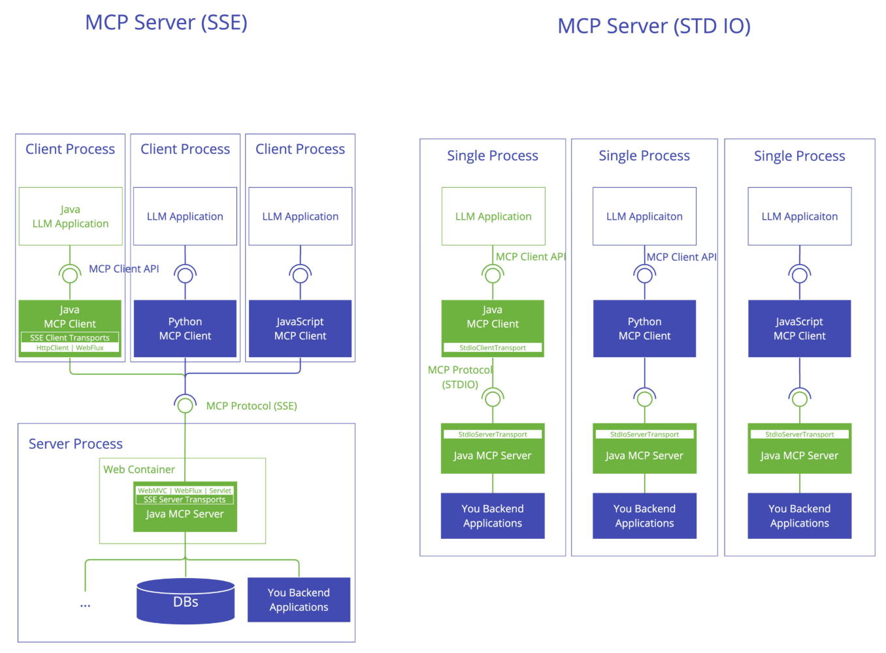
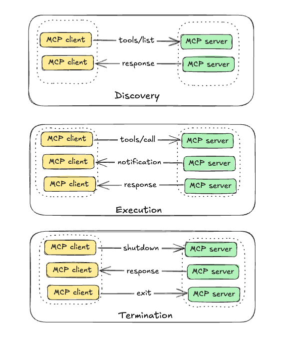

:computer: -> :snowflake: The Model Context Protocol (MCP) - What and How to run in Snowflake
This article provides my atempt to describe what is MCP (Model Context Protocol) and how you can use it. It will also provide examples of how to use it torwards Snowflake Cortex Agent.
What is MCP (Model Context Protocol)
Often described as the “USB-C for AI Applications”. Why? Just as USB-C provides standardized interface for connecting various devices, MCP offers a protocol for connecting AI model to external capabilities, like databases, APIs, etc.
Why MCP: The MxN Integration Challenge
With the increasing numbers of AI tools and data providers, the lack of single implementation that works with multiple AI applications becomes the MxN intregation challenge: M different AI applications tha needs to talk to N different external tools or data sources.

Picture by: Author
With MCP, AI applications implements the MCP client and the tools and data sources implements the MCP server.

Picture by: Author
MCP Components
MCP follows the distributed system principle where devices (mcp clients and mcp servers) cooperate to achieve a common goal, often coodidating through a network protocol (ref. Distributed computing by Wikepedia).
Thus MCP components and its tasks are:
- Host AI application: user AI application where users interact with such as Claude Desktop, Cursor or customer applications built with libraries like LangChain and LlammaIndex.
- MCP client: component which is part of the host AI application managing the communication with the MCP server(s) in a 1-to-1 connection client-server.
- MCP server: remote server exposing capabilities such as resources, tools and prompts via the MCP protocol. It can run locally or remotely.
- MCP Protocol: the open protocol enabling integration between client and server based on JSON-RPC message format and stateful connections (ref. MCP protocol specification).
MCP Architecture
MCP follows the client-server architecture as described below. It is a modular architecture where clients can connect to multiple servers. Given the distributed system principle in this architecture, important features such as safety, extensibility and interoperability is very important.

Picture by: modelcontextprotocol.io
Capabilities:
In MCP client and server run discovery message to understand which capabilities the server contains. Currently in MCP the capabilities are:
- Tools: Functions that can be called by the LLM (with user approval).
- Usecases are sending messages, creating tickets, querying APIs, performing calculations.
- Resource: File-like data that can be read by clients (like GET API responses or file contents).
- Usecases are accessing file contents, retrieving database records, reading configuration information.
- Prompts: Pre-written templates that help users accomplish specific tasks.
- Usecases are common workflows, specialized task templates, guided interactions.
Clients can offer sampling, a server-initiated agentic behaviour and recursive LLM interactions, as a feature to servers. Common usecases here are complex multi-step tasks, autonomous agent workflows, and interactive processes.
See here an example of a simple MCP weather server in python.
The MCP Communication Protocol
The Model Context Protocol (MCP) is an open protocol that enables seamless integration between LLM applications and external data sources and tools.
MCP uses JSON-RPC 2.0 message format for client-server communication, which is a remote procedure call protocol encoded in JSON, making it human readable and language agnostic.
The transport mechanisms are stdio (standard input/ouput) or HTTP+SSE / Streamable HTTP.
stdio is used for local communication where client and server run on the same host.
HTTP+SSE ( Server-Sent Events) / Streamable HTTP is used for remote communication.
[!NOTE]
Streamable HTTP replaces the HTTP+SSE transport from protocol version 2024-11-05. See the backwards compatibility guide.

Picture by: modelcontextprotocol.io
The MCP Communication Protocol: Message Types
The messages type defined by the protocol (2025-03-26 (Latest)) are:
Requests
{
jsonrpc: "2.0";
id: string | number;
method: string; -> e.g.: tools/calls
params?: {
[key: string]: unknown;
};
}Responses
{
jsonrpc: "2.0";
id: string | number;
result?: {
[key: string]: unknown;
}
error?: {
code: number;
message: string;
data?: unknown;
}
}Notifications
{
jsonrpc: "2.0";
method: string;
params?: {
[key: string]: unknown;
};
}Notifications are one-way message that do not require response as it is tipically sent from server to client to provide updates and/or notifications about events.
See below the interaction between client and server using the MCP protocol message types (inspired by MCP course by HuggingFace).

The full specification of the protocol is defined as a TypeScript schema.
MCP SDK - Software Defined Kit
Currently the MCP SDK is available for Python, TypeScript, Java, Kotlin, C# and Swift.
The code example below from the MCP Python SDK presents a simple MCP server that expose a calculator tool and some data example .
# server.py
from mcp.server.fastmcp import FastMCP
# Create an MCP server
mcp = FastMCP("Demo")
# Add an addition tool
@mcp.tool()
def add(a: int, b: int) -> int:
"""Add two numbers"""
return a + b
# Add a dynamic greeting resource
@mcp.resource("greeting://{name}")
def get_greeting(name: str) -> str:
"""Get a personalized greeting"""
return f"Hello, {name}!"When to use MCP (To Be Done)
When you need a single AI assistant to access external data or tools - like searching documents, scheduling meetings, or querying databases.
How to use MCP in Snowflake (To Be Done)
Quickstart: https://quickstarts.snowflake.com/guide/mcp-server-for-cortex-agents/index.html Repo: https://github.com/Snowflake-Labs/sfguide-mcp-cortex-agents
🤔 Things to Consider
📚 Reference:
- Workflow behind MCP and A2A
- Course: MCP: Build Rich-Context AI Apps with Anthropic
- Course: MCP Course by HuggingFace
- MCP server with Docker
- An Introduction to MCP and Authorization by Martinez
[!TIP]
Get started with your first MCP server using Snowflake using the Snowflake Quickstart Build an MCP Server for Cortex Agents